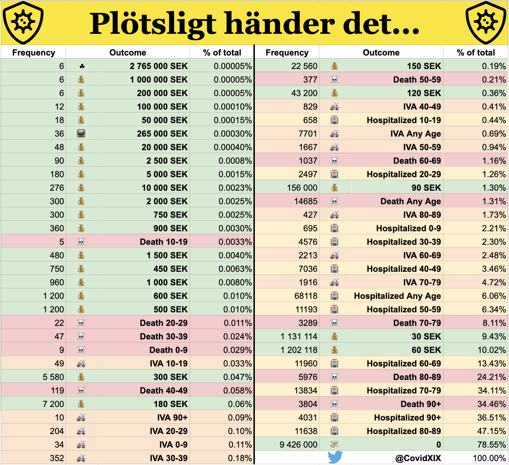

Back to the scratch off-game. Scroll down for complete odds table.
Scratch off odds taken from TRISS by Svenska Spel
Calculated from series of 12 million tickets
Covid outcomes calculated from all confirmed PCR cases in Sweden, from 2020-02-04 to 2021-08-27 (FHM)
Statistics from The Public Health Agency of Sweden, Folkhälsomyndigheten
Statistics on hospitalized patients from week 10 2020 to week 31 2021.
Taken from The National Board of Health and Welfare, Socialstyrelsen
| Statistic | Total |
|---|---|
| Total Confirmed Cases | 1123413 |
| Total Deaths (FHM): | 14685 |
| Total IVA (FHM): | 7701 |
| Total Hospitalized (SoS): | 68118 |
As the covid statistics only take PCR confirmed cases into account, it does not show the odds as an estimatation of the actual risk when contracting covid.
The true number of covid-19 infections in each age group is likely much higher than the number of PCR positive individuals.
The actual risk would thus be lower than these %.
So this is merely a retrospective look on previous confirmed infections.
If you pick a random confirmed case in any age group, what is the %-chance that this case was a fatality?
1123413 total cases.
14685 deaths.
14685/1123413 = 0.01307, 1.3%. About the same as the chances of your randomly selected TRISS-lott wins you 90 SEK.
156000 wins with 90 SEK.
12000000 scratch off tickets.
156000/12000000 = 0.013, 1.3%
The "win table" for the "NOTHING" outcome is somewhat inflated due to how i choosed to calculate it.
The % are calculated as if as many as possible of the negative outcomes happen with the same individuals.
If there are 100 hospitalizations and 100 deaths, on 200 cases, my calculations assumes 100% of the deaths were hospitalized.
So the "NOTHING" outcome would be 50%, even though most likely several individuals were hospitalized without dying
and several died without being hospitalized, thus lowering the "NOTHING" outcome below 50%.
But I'd rather err in this direction.
Questions or comments or bug reports or praise: @CovidXIX
Full odds table below.
